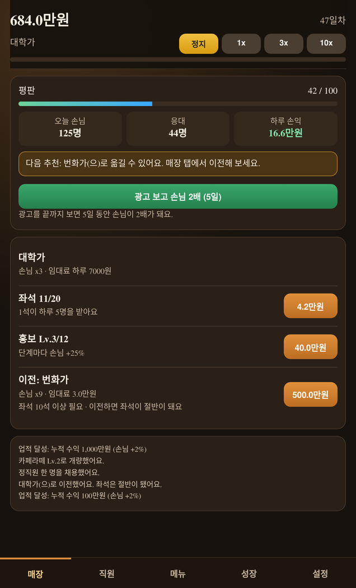

TOSS MINI APP
☕ 카페 타이쿤
작은 골목 카페에서 백화점 1층까지

- 🪑아메리카노 3,000원 → 하루 순익 16만 원좌석·홍보·이전으로 매장을 키워요
- 👥알바 → 매니저 → 총매니저직원을 뽑고 1x·3x·10x 배속으로 돌려요
- 🏬대학가 → 번화가 → 백화점 1층앱을 꺼도 매출이 쌓이는 방치형 경영
토스 앱이 안 열리나요?
- 토스 앱이 설치돼 있는지 확인해 주세요. 없으면 아래에서 설치할 수 있어요.
- 설치했다면 다시 토스 앱에서 카페 타이쿤 열기 버튼을 눌러 주세요.
- 그래도 안 되면 토스 앱 → 검색창에 카페 타이쿤 입력하면 바로 나와요.
카페 타이쿤 · 토스 미니앱
intoss://cafetycoon